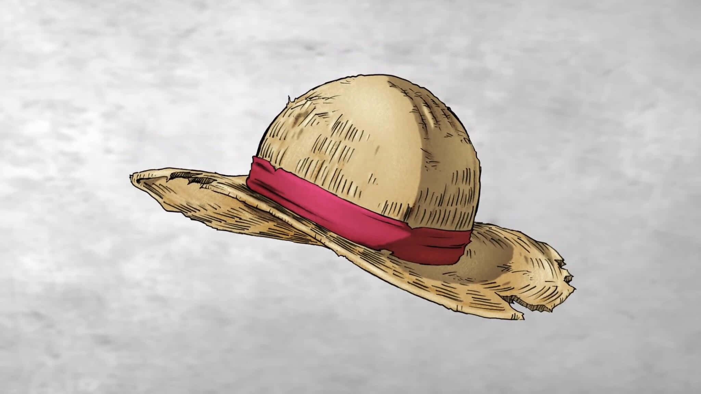

Plongez dans l'univers épique de One Piece, le manga légendaire de Eiichiro Oda. Découvrez l'histoire de Monkey D. Luffy et de son équipage dans leur quête du trésor ultime : le One Piece.

L'équipage des Chapeaux de Paille
Formé par Monkey D. Luffy, l'équipage des Chapeaux de Paille est l'un des plus célèbres de l'ère des pirates. De Roronoa Zoro le sabreur légendaire à Nami la navigatrice hors pair, chaque membre apporte ses talents uniques à l'aventure.